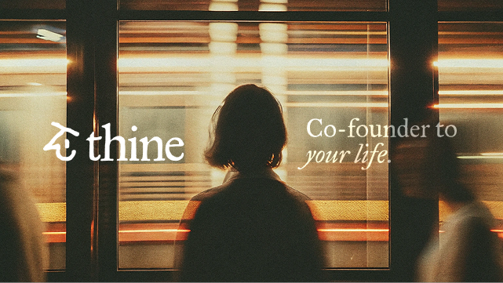
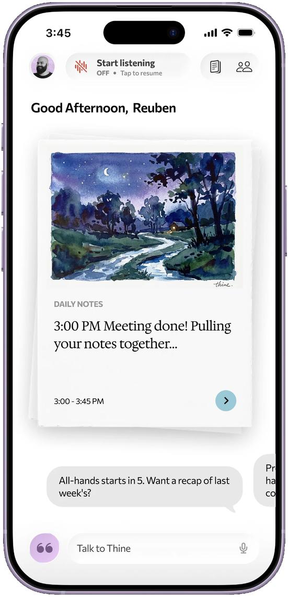
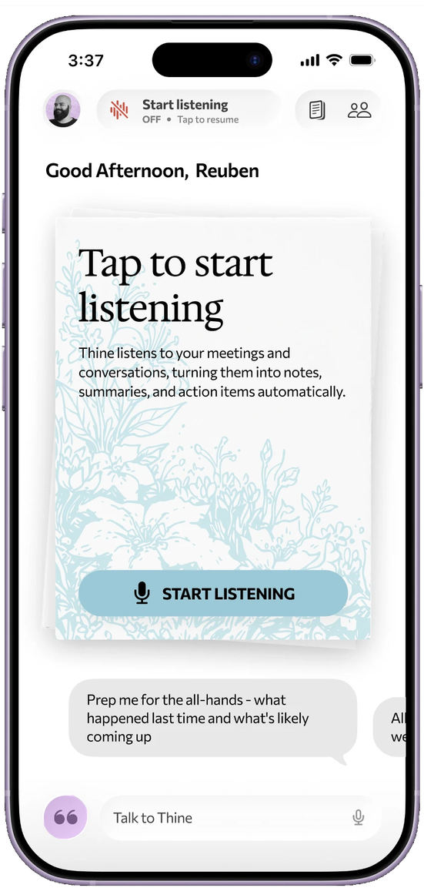

Privacy-first intelligence that lives alongside you, holding the context you can't fit in a prompt, and surfacing answers to the questions you can't quite articulate.

General-purpose AI is built to answer questions you already know how to ask. Do this. Write that. Perform these steps.
It can't answer "Am I becoming who I wanted to be?" Not because it isn't smart enough, but because that answer doesn't live in a single prompt. It's scattered across conversations with mentors three years ago, one-on-ones with coworkers, a 2 AM moment of doubt, something someone said last week that hasn't quite landed.
Thine is built for that gap. A privacy-first personal intelligence that lives alongside you across work and life, holding the context most tools throw away, and surfacing it back when it matters, not only when you remember to ask.
Not a chatbot you prompt. A co-founder to your life.
Holds the whole story. Thine doesn't reset with every conversation. It carries context across meetings, messages, and moments the way a real co-founder would.
Synthesizes scattered context. Mid-meeting, ask "what are all the ways we've described this product?" It pulls six months of fragmented conversations into one clear answer.
Notices patterns you'd miss. "Three people mentioned the same problem this week." "You've mentioned calling your mom four times." The connection you couldn't quite see.
Knows where to start. Before 10 AM, it already knows what loops are open with your team, what was said in hallway conversations that never made it to a doc, what you forgot to follow up on.
Privacy-first by architecture. The intelligence lives with you, not as a data pipeline feeding a third party. Privacy isn't a settings toggle. It's the starting premise.
Every one of those capabilities could become a screen. A memory log. A synthesis panel. A pattern dashboard. A privacy settings page with every toggle exposed.
Most teams would ship that as-is, proof of everything happening on your behalf.
It's also exactly what would make Thine feel like a tool again.
The moment "co-founder" becomes something you check, configure, and manage, it's stopped being a co-founder. It's just another app competing for your attention.
So the harder discipline isn't building capability. It's deciding when Thine stays silent. Most of what it holds never surfaces as a screen. It surfaces instead as a single message at the right moment: "Three people mentioned the same problem this week." Not a dashboard you'd have to visit to find that out.
Fewer surfaces, better timing, over feature completeness. What reaches you is only what's relevant, only when it's relevant. The full depth of what Thine knows stays underneath.
At work. Thine holds the product context usually split across engineering, design, and sales pulling in different directions. When someone asks "what's the vision, again?" it hands you the synthesized answer.
In relationships. It remembers the things you meant to follow up on. The call to your mom you've mentioned four times. The date idea you never landed on. The promise you made that slipped your mind.
In the moments that don't fit a prompt. "Am I building something real?" Thine doesn't answer for you. It surfaces the pattern of your own life back to you, so you can answer it yourself.
Most AI optimizes for task completion: faster answers, better outputs, less typing. Thine optimizes for something else: being present for the parts of life that don't arrive as a task.
It doesn't try to remember everything. It tries to be a partner for questions you live through but can't quite ask. The screen stays out of the way: not autocomplete for an inbox, and not a dashboard of everything it holds.
Yours. Not a dashboard you check. Most of what Thine holds never becomes a screen. What does is one card, for the story you're already living.

One thought, not a queue. The home screen doesn't open onto a dashboard of forty competing widgets. It opens onto a single card, today's meeting, already summarized and waiting for you. Thine decides what deserves your attention before you have to, so opening the app feels like being handed an answer instead of another list to triage.

Ambient Capture is the feature Thine is built around. One tap turns on passive listening, and every meeting or conversation becomes notes, summaries, and action items on its own, with no mid-call fumbling for a separate notes app. The permission screen itself is deliberately soft, an illustration and a single honest sentence rather than a wall of legal text.
Context doesn't live in one place, so Thine doesn't either. Daily Notes lays the day out chronologically: meetings, standups, the conversation that ran long. Integrations quietly pulls in Google Workspace, Slack, and Notion so nothing has to be copied over by hand. The calendar holds the memory; the integrations are what feed it.
Every relationship gets its own card. People turns scattered mentions (a coworker's role, a brother who's also a flatmate, the marketing lead's meme habit) into a running profile Thine can draw on mid-conversation. Settings, by contrast, stays deliberately sparse: a handful of toggles for listening and permissions rather than a maze of configuration to get lost in.